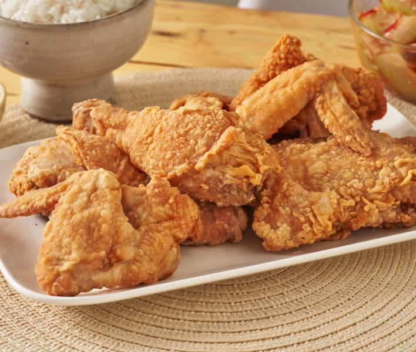

Fried Chicken Recipe

Description
Fried chicken, or Southern fried chicken, is coated in seasoned flour or batter
and cooked by pan, deep, pressure, or air frying.
The crispy crust locks in juices, usually using broiler chickens.
Ingredients
- 1 Chicken, cut into pieces
- 1 cup buttermilk
- 2 cups All-purpose flour for coating
- 1 tsp paprika
- Salt and Pepper, to taste
- Cooking Oil
Steps
- Prepare the Chicken, Skin the chicken if desired
- Coat with Flour, mix flour, salt and pepper
- Dip and Shake, dip chicken in buttermilk
- Rest, Let coated chicken sit until the flour forms a paste-like consistency
- Heat Oil, Fill a skillet with oil and heat until very hot
- Fry, brown chicken on both sides, then cover an cook for 30 minutes
- Crisp up, Uncover, raise heat and fry until crispy
- Drain and Serve, Drain on paper towels and keep warm if frying in batches.
Nutritional Facts per serving
- 489 Calories
- 22g Fat
- 30g Carbs
- 41g Protein